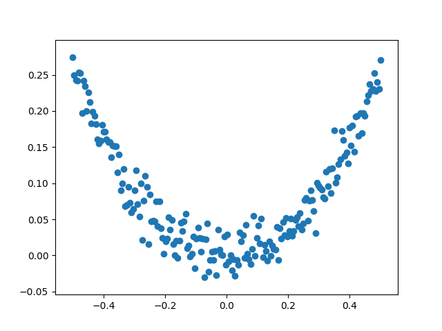
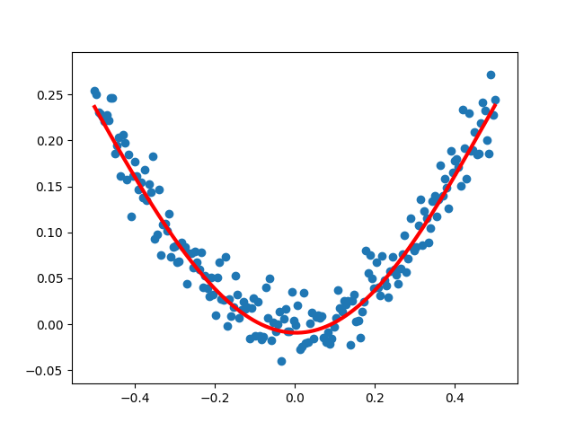

1 | from tensorflow import keras |
 1
2
3
4
5
6
7
8
9
10
11
12
13
14
15
16
17
18
19
20
21
22
23
24
25
26
27
28
29
30
31
32
33
34
35#构建一个顺序模型
model=Sequential()
#在模型中添加一个全连接层
#网络结构：1--10--1（输入层--隐藏层--输出层）
model.add(Dense(units=10,input_dim=1,activation='tanh'))#现在units是隐藏层的结点数：10
#model.add(Activation('tanh'))#添加激活函数的另外一种方法
model.add(Dense(units=1,input_dim=10,activation='tanh'))#这里的输入维度input_dim可以省略，默认就是上一层的输出：10
#model.add(Activation('tanh'))#添加激活函数的另外一种方法
#定义优化算法
sgd=SGD(lr=0.3)#增大sgd的学习率(默认是0.01)，以减少训练次数
#编译模型
model.compile(optimizer=sgd,loss='mse')
#训练模型(训练3001个批次)
for step in range(3001):
#每次训练一个批次
cost=model.train_on_batch(x_data,y_data)#把所有数据作为一个批次进行训练
#每500个batch打印一次cost值
if step%500==0:
print('cost:',cost)
#打印权值和偏置值
W0,b0=model.layers[0].get_weights()
print('W0:',W0,'b0:',b0)
W1,b1=model.layers[1].get_weights()
print('W1:',W1,'b1:',b1)
#把x_data输入网络中，得到预测值y_pred
y_pred=model.predict(x_data)
#显示随机点
plt.scatter(x_data,y_data)
#显示预测结果
plt.plot(x_data,y_pred,'r-',lw=3)
plt.show()
输出结果：1
2
3
4
5
6
7
8
9
10
11
12
13
14
15
16
17
18
19
20cost: 0.014056709
cost: 0.00520279
cost: 0.003079262
cost: 0.0015911908
cost: 0.0006481447
cost: 0.0005247076
cost: 0.00051465025
W0: [[-1.3358053 -1.4224494 0.20232533 -0.6066645 -0.10370493 0.23419712
0.7197719 -0.36955625 -0.04164154 -0.24170761]] b0: [-0.54529893 0.5815663 -0.18308175 -0.08960333 0.16555873 -0.17367946
-0.21355069 -0.0029226 -0.2519434 -0.08364421]
W1: [[ 0.8520078 ]
[-0.8093865 ]
[-0.4979416 ]
[ 0.18443288]
[ 0.3505873 ]
[-0.5481949 ]
[ 0.3195532 ]
[-0.2096716 ]
[-0.49501932]
[-0.30411953]] b1: [0.5309287]

对以上输出结果的理解：
(1) W0和b0是输入层(1个结点)到隐藏层(10个结点)的权重和偏置值，因为从输入层到隐藏层是由1个结点映射到10个结点，即有10条线由输入层发出，分别指向到隐藏层的10个结点，所以两者所含参数个数都为10；
(2) W1和b1是隐藏层(10个结点)到输出层(1个结点)的权重和偏置值，因为从隐藏层到输出层是由10个结点映射到1个结点，即有10条线指向输出层的唯一结点，因而W1含有10个参数，b1含有1个参数；
通俗来讲，b的个数与该层所指向的下一层的结点数一样，W与本层发出的‘线’的条数一样